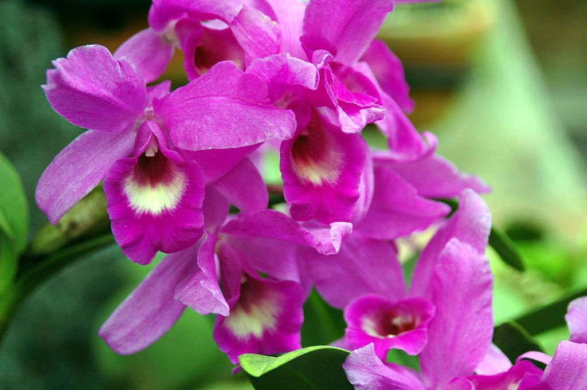
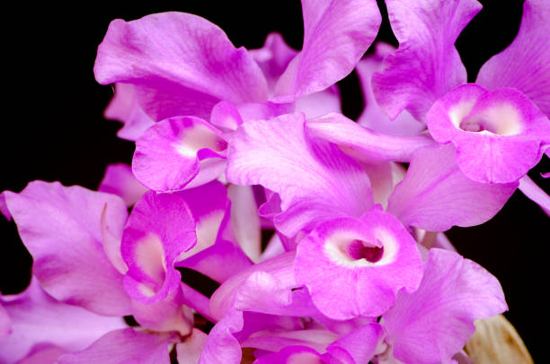
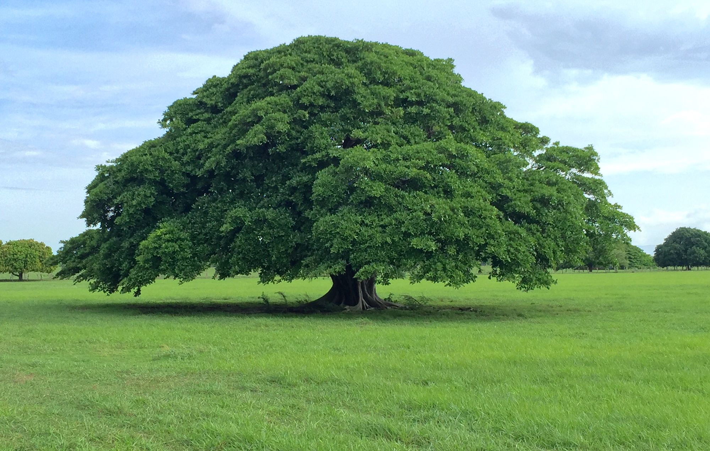
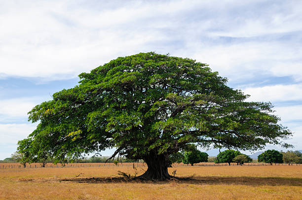
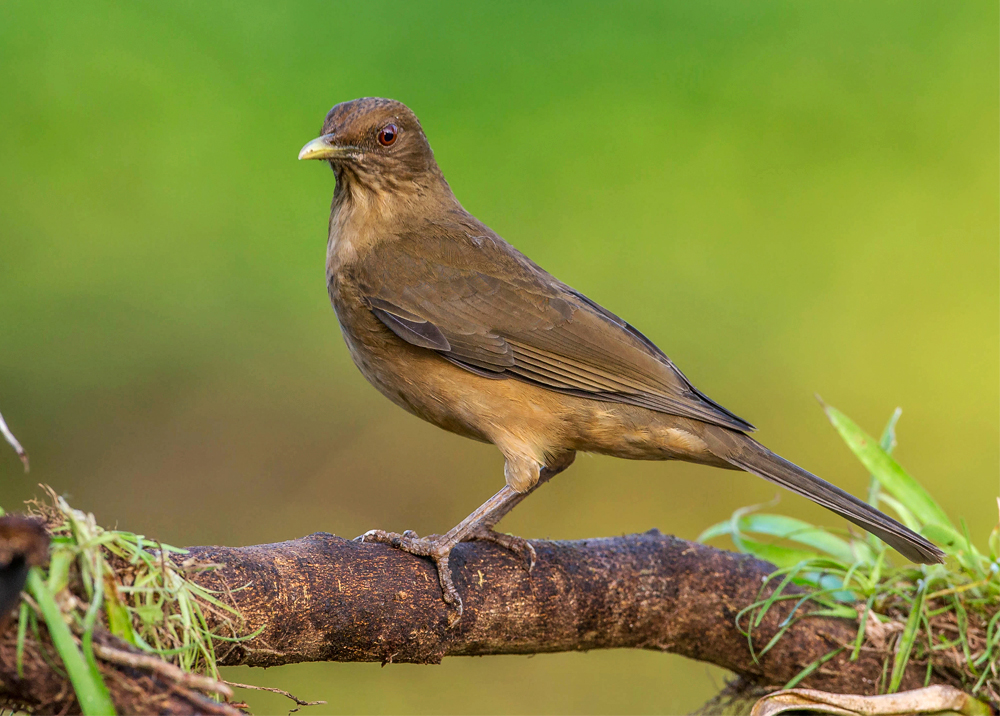
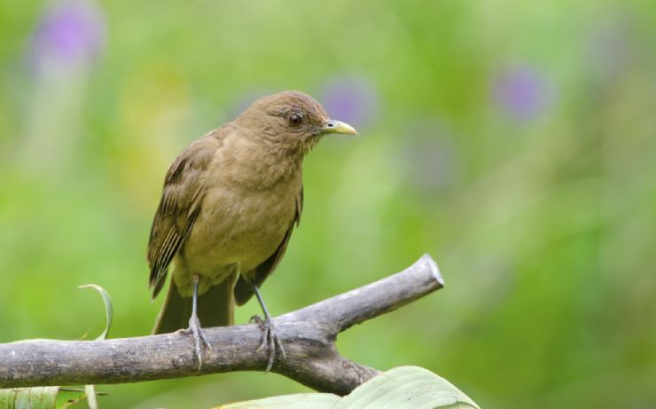
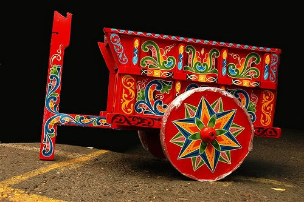
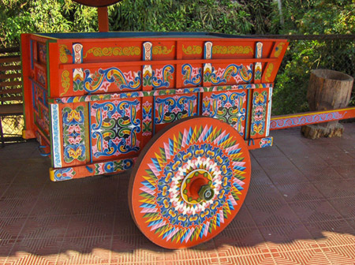
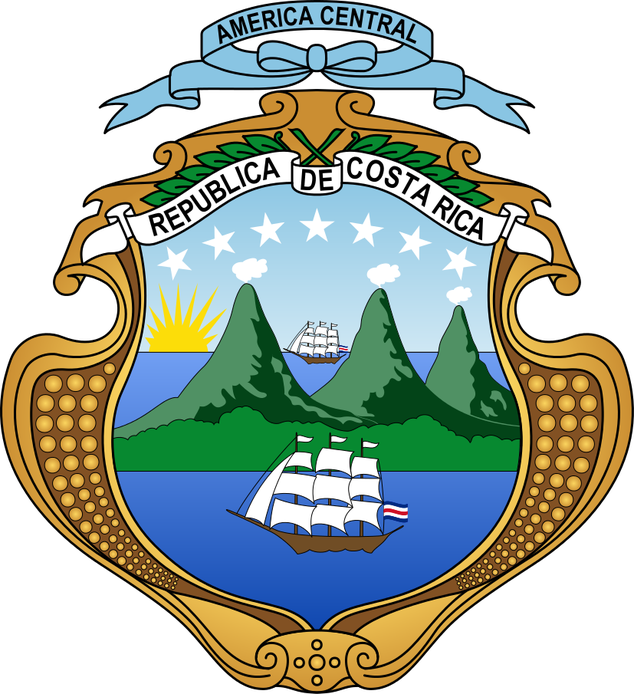
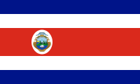

Es una especie de orquídea epífita nativa de las selvas húmedas de Centroamérica. Se distribuye desde buena parte de los bosques húmedos de Chiapas en México hasta registros al oeste de Panamá y Costa Rica. Fue declarada símbolo nacional en 1939 y algunas personas dicen que representa la belleza de las mujeres de Costa Rica.






Allan Quirós Córdoba / aquirosc095@ulacit.ed.cr
Jermys Loa Flores / jloaf751@ulacit.ed.cr